전기공사기사 (2012-03-10 기출문제)
1과목: 전기응용 및 공사재료
1. 납축전지의 화학 반응식으로 ( )에 해당하는 것은?
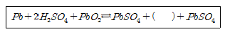
- 2HO2
- 2H2O
- HO
- 2H2O2
(정답률: 81%)

2. 다이오드 클램퍼(clamper)의 용도는?
- 전압증폭
- 전류증폭
- 전압제한
- 전압레벨 이동
(정답률: 76%)
3. 직류전동기의 기동방식으로 적합한 것은?
- 기동 보상기법
- 전전압 기동법
- 저항 기동법
- Y-△ 기동법
(정답률: 67%)
4. 전동기의 제동시 전원을 끊고 전동기를 발전기로 동작시켜 이때 발생하는 전력을 저항에 의해 열로 소모시키는 제동법은?
- 회생제동
- 발전제동
- 와전류제동
- 역상제동
(정답률: 74%)
5. 반구면 광원의 상반구 광속이 1000[lm], 하반구 광속은 3000[lm]이다. 평균 구면 광도는 약 몇 [cd]인가?
- 637
- 564
- 462
- 318
(정답률: 41%)
6. 자기소호 기능을 갖는 소자는?
- GTO
- SCR
- TRIAC
- LASCR
(정답률: 88%)
7. 단상 교류식 전기철도에서 통신선에 발생하는 유도 장해를 경감하기 위하여 사용되는 것은?
- 흡상 변압기
- 3권선 변압기
- 스콧트 결선
- 크로스본드
(정답률: 69%)
8. 완전 확산면의 휘도(B)와 광속 발산도(R)의 관계식은?
- R=4πB
- R=2πB
- R=πB
- R=π2B
(정답률: 82%)
9. 15[℃]의 물 4[L]를 1[kW]의 전열기를 사용하여 90[℃]로 가열하는데 30분 걸렸다. 이 전열기의 효율은 약 몇 [%]인가? (단, 증발은 없는 것으로 한다.)
- 70
- 75
- 80
- 85
(정답률: 74%)
10. 전기 저항 온도계의 저항체로 주로 사용되는 것은?
- 백금
- 텅스텐
- 은
- 주석
(정답률: 59%)
11. 보호계전기의 종류가 아닌 것은?
- ASS
- OCGR
- DGR
- SGR
(정답률: 89%)
12. 공기전지의 특징이 아닌 것은?
- 방전시에 전압변동이 적다.
- 온도차에 의한 전압변동이 적다.
- 사용 중의 자기방전이 크고 오랫동안 보존할 수 없다.
- 내열, 내한, 내습성을 가지고 있다.
(정답률: 86%)
13. EL 램프의 특징이 아닌 것은?
- 초박형 평면광원이다.
- 색상이 다양하며 소재가 견고하다.
- 전력소비 절감 및 수명이 길다.
- 발열식 광원이다.
(정답률: 70%)
14. 철근 콘크리트주에 완금을 취부할 때 사용하는 부속재는?
- 풀 스텝
- 행거밴드
- U 볼트
- 앵글베이스
(정답률: 64%)
15. 다음 중 옥내배선의 가는 전선을 박스 안에서 접속하는데 사용하는 슬리브는?
- 종단겹침용 슬리브
- 매킹타이어 슬리브
- B형 슬리브
- S형 슬리브
(정답률: 78%)
16. 전선 이상온도 검지장치에 사용되는 검지선의 규격으로 적합하지 않은 것은?
- 도체는 균질한 금속제의 연선일 것
- 외장의 가열온도는 90℃±2에 적합할 것
- 외장의 두께는 0.1mm 이상일 것
- 완성품은 맑은 물속에 1시간 담근 후 도체상호간 및 도체와 대지간에 500V 의 교류전압을 연속하여 1분간 가할 때 이에 견딜 것
(정답률: 43%)
17. 전기기기 절연계급의 종류별 최고 허용온도에 대한 규정으로 잘못된 것은?
- Y종 : 90℃
- E종 : 120℃
- F종 : 155℃
- H종 : 170℃
(정답률: 84%)
18. 노출공사에 사용되는 금속관을 조영재에 부착하는 재료는?
- 터미널 캡
- 새들
- 커플링
- 엔트런스 캡
(정답률: 74%)
19. 버스 덕트 배선에서 덕트의 최대 폭(mm)과 강판의 두께(mm)가 틀린 것은?
- 폭 150mm 이하일 때 두께 1.0mm 이상
- 폭 150mm 초과 300mm 이하일 때 두께 1.4mm이상
- 폭 300mm 초과 500mm 이하일 때 두께 1.6mm이상
- 폭 700mm 초과일 때 두께 2.0mm 이상
(정답률: 62%)
20. 방전등에 속하지 않는 것은?
- 수은등
- 할로겐등
- 형광 수은등
- 메탈 할라이드등
(정답률: 81%)
2과목: 전력공학
21. 전압강하율이 10[%]인 단거리 배전선로가 있다. 송전단의 전압이 100[V]일 때 수전단의 전압은 약 몇[V]인가?
- 82[V]
- 91[V]
- 98[V]
- 108[V]
(정답률: 28%)
22. 각 수용가의 수용설비용량이 50[kW], 100[kW], 80[kW], 60[kW], 150[kW]이며, 각각의 수용률이 0.6, 0.6, 0.5, 0.5, 0.4일 때 부사의 부등률이 1.3이라면 변압기 용량은 약 몇 [kVA]가 필요한가? (단, 평균 부하역률은 80% 라고 한다.)
- 142[kVA]
- 165[kVA]
- 183[kVA]
- 212[kVA]
(정답률: 24%)
23. 다음 주 개폐 서지의 이상전압을 감쇄 할 목적으로 설치하는 것은?
- 단로기
- 차단기
- 리액터
- 개폐저항기
(정답률: 27%)
24. 단락점까지의 전선 한 가닥의 임피던스가 Z=6+j8[Ω](전원포함), 단락 전의 단락점 전압이 22.9[kV]인 단상 2선식 전선로의 단락용량은 몇 [kVA]인가? (단, 부하전류는 무시한다.)
- 13110[kVA]
- 26220[kVA]
- 39330[kVA]
- 52440[kVA]
(정답률: 14%)
25. GIS(Gas Insulated Switch Gear)를 채용할 때, 다음 중 틀린 것은?
- 대기 절연을 이용한 것에 비하면 현저하게 소형화할 수 있다.
- 신뢰성이 향상되고, 안정성이 높다.
- 소음이 적고 환경 조화를 기할 수 있다.
- 시설공사 방법은 복잡하나, 장비비가 저렴하다.
(정답률: 24%)
26. 3상3선식에서 선간거리가 각각 50[cm], 60[cm], 70[cm]인 경우 기하평균 선간거리는 몇 [cm]인가?
- 50.4
- 59.4
- 62.8
- 64.8
(정답률: 28%)
27. 직접접지방식이 초고압 송전선에 채용되는 이유 중 가장 적당한 것은?
- 지락고장시 병행 통신선에 유기되는 유도전압이 적기 때문에
- 지락시의 지락전류가 적으므로
- 계통의 절연을 낮게 할 수 있으므로
- 송전선의 안정도가 높으므로
(정답률: 23%)
28. Recloser(R), Sectionalizer(S), Fuse(F)의 보호협조에서 보호협조가 불가능한 배열은? (단, 왼쪽은 후비보호, 오른쪽은 전위보호 역할임)
- R - R - F
- R - S
- R - F
- S - F - R
(정답률: 25%)
29. 송전선로에 복도체를 사용하는 주된 이유는?
- 철탑의 하중을 평형 시키기 위해서이다.
- 선로의 진동을 없애기 위해서이다.
- 선로를 뇌격으로부터 보호하기 위해서이다.
- 코로나를 방지하고 인덕턴스를 감소시키기 위해서 이다.
(정답률: 28%)
30. 중거리 송전선로의 T형 회로에서 송전단 전류 I3는? (단, Z,Y는 선로의 직렬 임피던스와 병렬 어드미턴스이고, Er은 수전단 전압, Ir은 수전단 전류이다.)
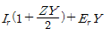
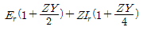
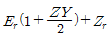
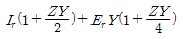
(정답률: 20%)
31. 펌프의 양수량Q[m3/sec], 유효 양정 Hu[m], 펌프의 효율 ῃp전동기의 효율 ῃm일 때, 양수발전기의 출력[kW]은?
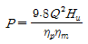
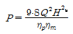
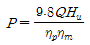
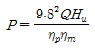
(정답률: 27%)
32. 무부하시의 충전전류 차단만이 가능한 것은?
- 진공차단기
- 유입차단기
- 단로기
- 자기차단기
(정답률: 25%)
33. 전력계통의 주파수 변동의 원인 중 가장 큰 영향을 미치는 것은?
- 변압기의 탭 조정
- 스팀 터빈 발전기의 거버너 밸브 열고 닫기
- 발전기의 자동전압조정기(AVR)의 동작
- 송전선로에 병렬콘덴서의 투입
(정답률: 21%)
34. 수차를 돌리고 나온 물이 흡출관을 통과할 때 흡출관의 중심부에 진공상태를 형성하는 현상은?
- racing
- jumping
- hunting
- cavitation
(정답률: 24%)
35. 화력발전소에서 증기 및 급수가 흐르는 순서는?
- 절탄기 → 보일러 → 과열기 → 터빈 → 복수기
- 보일러 → 절탄기 → 과열기 → 터빈 → 복수기
- 보일러 → 과열기 → 절탄기 → 터빈 → 복수기
- 절탄기 → 과열기 → 보일러 → 터빈 → 복수기
(정답률: 21%)
36. 고압 배전선로의 중간에 승압기를 설치하는 주목 적은?
- 부하의 불평형 방지
- 말단의 전압강하 방지
- 전력손실의 감소
- 역률 개선
(정답률: 23%)
37. 전원이 양단에 있는 환상선로의 단락보호에 사용되는 계전기는?
- 방향거리계전기
- 부족전압계전기
- 선택접지계전기
- 부족전류계전기
(정답률: 26%)
38. 변전소에서 비접지 선로의 접지보호용으로 사용되는 계전기에 영상전류를 공급하는 것은?
- CT
- GPT
- ZCT
- PT
(정답률: 29%)
39. 송전선로에서 1선 지락의 경우 지락전류가 가장 작은 중성점 접지방식은?
- 비접지방식
- 직접접지방식
- 저항접지방식
- 소호리액터접지방식
(정답률: 24%)
40. 1선 1km당의 코로나 손실 P[kW]를 나타내는 Peek식은? (단, δ : 상대공기밀도, D : 선간거리cm], d : 전선의 지름[cm], f: 주파수[Hz], E : 전선에 걸리는 대지전압[kV], E0 : 코로나 임계전압[kV]이다.)
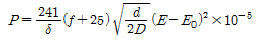
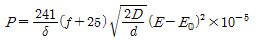
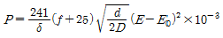
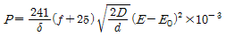
(정답률: 17%)
3과목: 전기기기
41. 정격이 5[kW], 100[V], 1800[rpm]인 타여자 직류 발전기가 있다. 무부하시의 단자전압은? (단, 계자전압 50[V], 계자전류 5[A], 전기가 저항 0.2[Ω] 브러시의 전압강하는 2[V]이다.)
- 100[V]
- 112[V]
- 115[V]
- 120[V]
(정답률: 22%)
42. 대형 직류 전동기의 토크를 측정하는데 가장 적당한 방법은?
- 전기 동력계
- 와전류 제동기
- 프로니 브레이크법
- 앰플리다언
(정답률: 21%)
43. 전기차 도체의 굵기, 권수가 모두 같을 때 단중 중권에 비해 단중 파권 권선의 이점은?
- 전류는 커지며 저전압이 이루어진다.
- 전류는 적으나 저전압이 이루어진다.
- 전류는 적으나 고전압이 이루어진다.
- 전류가 커지며 고전압이 이루어진다.
(정답률: 22%)
44. A, B 2대의 동기발전기를 병렬 운전할 때 B발전기의 여자전류를 증가시키면?
- B발전기의 역률 저하
- B발전기의 전류 감소
- B발전기의 무효전력 감소
- B발전기의 전력 증가
(정답률: 19%)
45. 보극이 없는 직류기에서 브러시를 부하에 따라 이동시키는 이유는?
- 공극 자속의 일그러짐을 없애기 위하여
- 유기기전력을 없애기 위하여
- 전기자 반작용의 감자분력을 없애기 위하여
- 정류작용을 잘 되게 하기 위하여
(정답률: 17%)
46. 다음 중 VVVF 제어방식으로 가장 적당한 전동기는?
- 동기 전동기
- 유도 전동기
- 직류 직권전동기
- 직류 분권전동기
(정답률: 20%)
47. 유도전동기의 2차 여자제어법에 대한 설명으로 틀린 것은?
- 권선형 전동기에 한하여 이용된다.
- 동기속도의 이하로 광범위하게 제어할 수 있다.
- 2차측에 슬립링을 부착하고 속도제어용 저항을 넣는다.
- 역률을 개선할 수 있다.
(정답률: 10%)
48. 1차 전압 2200[V], 무부하 전류 0.088[A], 철손 110[W]인 단상 변압기의 자화 전류는 약 몇 [A]인가?
- 0.⑤
- 0.038
- 0.072
- 0.088
(정답률: 18%)
49. 75[W] 정도 이하의 소출력 단상 직권정류자 전동기의 용도로 적합하지 않는 것은?
- 소형공구
- 치과의료용
- 믹서
- 공작기계
(정답률: 25%)
50. 돌극형 동기발전기에서 직축 동기 리액턴스를 Xd, 횡축동기 리액턴스를 Xq라 할 때의 관계는?
- Xd > Xq
- Xd < Xq
- Xd = Xq
- Xd << Xq
(정답률: 22%)
51. 반도체 정류기에서 첨두 역방향 내전압이 가장 큰 것은?
- 셀렌 정류기
- 게르마늄 정류기
- 실리콘 정류기
- 아산화동 정류기
(정답률: 28%)
52. 동기 각속도 w0, 회전자 각속도 w인 유도전동기의 2차 효율은?
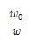
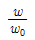
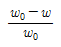
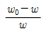
(정답률: 22%)
53. 다음 권선법 중 직류기에서 주로 사용되는 것은?
- 폐로권, 환상권, 이층권
- 폐로권, 고상권, 이층권
- 개로권, 환상권, 단층권
- 개로권, 고상권, 이층권
(정답률: 25%)
54. 변압기 1차측 사용 탭이 6300 [V]인 경우 2차측 전압이 110[V]였다면 2차측 전압을 약 120[V]로 하기 위해서는 1차측의 탭을 몇 [V]로 해야 되는가?
- 6000
- 6300
- 6600
- 6900
(정답률: 19%)
55. 동일 용량의 변압기 두 대를 사용하여 11000[V]의 3상식 간선에서 440[V]의 2상 전력을 얻으려면 T좌 변압기의 권수비는 약 얼마로 해야 되는가?
- 28
- 30
- 22
- 25
(정답률: 15%)
56. 유도전동기와 직결된 전기동력계의 부하전류를 증가하면 유도전동기의 속도는?
- 증가한다.
- 감소한다.
- 변함이 없다.
- 동기 속도로 회전한다.
(정답률: 14%)
57. 동기전동기에 설치된 제동권선의 효과로 맞지 않는 것은?
- 송전선 불평형 단락 시 이상전압 방지
- 과부하 내량의 증대
- 기동 토크의 발생
- 난조 방지
(정답률: 16%)
58. 반도체 사이리스터로 속도 제어를 할 수 없는 것은?
- 정지형 레너드 제어
- 일그너 제어
- 초퍼 제어
- 인버터 제어
(정답률: 18%)
59. 동기 조상기의 회전수는 무엇에 의하여 결정되는가?
- 효율
- 역률
- 토크 속도
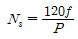
의 속도
(정답률: 23%)
60. 정격이 같은 2대의 단상변압기 1000[kVA]의 임피던스 전압은 각각 8[%]와 7[%]이다. 이것을 병렬로 하면 몇 [kVA]의 부하를 걸 수가 있는가?
- 1865
- 1870
- 1875
- 1880
(정답률: 16%)
4과목: 회로이론 및 제어공학
61. 어떤 회로에 100 + j20[V]인 전압을 가할 때 4 +j3[A]인 전류가 흐른다면 이 회로의 임피던스[Ω]는?
- 18.4 - j8.8[Ω]
- 27.3 + j15.2[Ω]
- 48.6 + j31.4[Ω]
- 65.7 – j54.3[Ω]
(정답률: 22%)
62. 불평형 3상 전류가 Ia=16+j2[A], Ib=-20-j9[A], Ic=-2+j10[A]일 때 영상분 전류[A]는?
- -2 + j[A]
- -6 + 3
- -9 + j6[A]
- -18 + j9[A]
(정답률: 21%)
63. 단자 a, b 간에 25[V]의 전압을 가할 때, 5[A]의 전류가 흐른다. 저항 r1, r2에 흐르는 전류비가 1:3일 때 r1, r2의 값은?
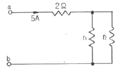
- r1=12[Ω], r2=4[Ω]
- r1=4[Ω], r2=12[Ω]
- r1=6[Ω], r2=2[Ω]
- r1=2[Ω], r2=6[Ω]
(정답률: 20%)
64. 송전선로가 무손실 선로일 때 L=96[mH]이고, C=0.6[μF]이면 특성임피던스[Ω]는?
- 100[Ω]
- 200[Ω]
- 400[Ω]
- 500[Ω]
(정답률: 26%)
65. 테브낭 정리를 사용하여 그림(a)의 회로를 그림 (b)와 같이 등가회로로 만들고자 할 때 V[V]와 R[Ω]의 값은?
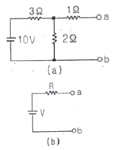
- V=5[V], R=0.6[Ω]
- V=2[V], R=2[Ω]
- V=6[V], R=2.2[Ω]
- V=4[V], R=2.2[Ω]
(정답률: 16%)
66. 다음과 같은 T형 회로의 임피던스 파라미터 Z22의 값은?
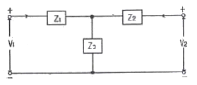
- Z1
- Z3
- Z1+Z3
- Z2+Z3
(정답률: 21%)
67. 그림과 같은 파형의 파고율은?
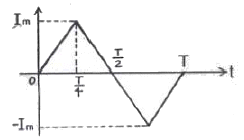
- 1/√3
- 2/√3
- √2
- √3
(정답률: 18%)
68. 어떤 회로에서 유효전력 80[W], 무효전력 60[Var]일 때 역률은?
- 0.8[%]
- 8[%]
- 80[%]
- 800[%]
(정답률: 21%)
69. 저항이 40[Ω], 인덕턴스가 79.58[mH]인 R-L직렬회로에 311 sin(377t+30˚)[V]의 전압을 가할 때 전류의 순시값[A]은 약 얼마인가?
- 4.4∠-6.87˚[A]
- 4.4∠3.87˚[A]
- 6.2∠-6.87˚[A]
- 6.2∠36.87˚[A]
(정답률: 13%)
70. 각상의 임피던스 Z=6 + j8[Ω]인 평형 Δ부하에 선간 전압이 220[V]인 대칭 3상 전압을 가할 때 선전류는 약 몇 [A]인가?
- 11[A]
- 13.5[A]
- 22[A]
- 38.1[A]
(정답률: 19%)
71. 그림과 같은 블록선도로 표시되는 제어계는?
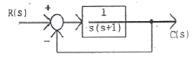
- 0형
- 1형
- 2형
- 3형
(정답률: 21%)
72. 나이퀴스트 선도에서의 임계점(-1, j0)는 보드 선도에서 대응하는 이득[dB]과 위상은?
- 1, 0˚
- 0, -90˚
- 0, 180˚
- 0, 90˚
(정답률: 24%)
73. 루프 전달함수가 다음과 같은 제어계의 실수축 상의 근궤적 범위는? (단, K>0)
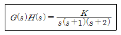
- 0 ~ -1 사이의 실수축상
- -1 ~ -2 사이의 실수축상
- -2 ~ -∞ 사이의 실수축상
- 0 ~ -1, -2 ~ -∞ 사이의 실수축상
(정답률: 20%)
74. 그림과 같은 신호흐름선도에서 C/R를 구하면?
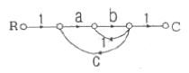
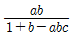
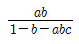
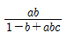
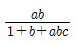
(정답률: 22%)
75. 그림과 같은 RC회로에서 RC≪1인 경우 어떤 요소의 회로인가?
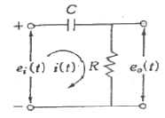
- 비례요소
- 미분요소
- 적분요소
- 추이요소
(정답률: 20%)
76. 상태방정식 x=Ax(t)+Bu(t)에서
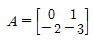
인 시스템의 안정도는 어떠한가?- 안정하다.
- 불안정하다.
- 임계안정하다.
- 판정불능
(정답률: 8%)
77. 다음 설명 중 틀린 것은?
- 상태공간 해석법은 비선형∙시변 시스템에 대해서도 사용 가능하다.
- 상태 방정식은 입력과 상태변수의 관계로 표현된다.
- 상태변수는 시스템의 과거, 현재 그리고 미래 조건을 나타내는 척도로 이용된다.
- 상태 방정식의 형태가 다르게 표현되면 시간응답 또는 주파수 응답이 변한다.
(정답률: 11%)
78. 서보모터의 특징으로 틀린 것은?
- 원칙적으로 정역전 운전이 가능하여야 한다.
- 저속이며 거침없는 운전이 가능하여야 한다.
- 직류용은 없고 교류용만 있다.
- 급가속, 급감속이 용이한 것이라야 한다.
(정답률: 26%)
79. 자동제어계의 기본적 구성에서 제어요소는 무엇으로 구성되는가?
- 비교부와 검출부
- 검출부와 조작부
- 검출부와 조절부
- 조절부와 조작부
(정답률: 26%)
80.
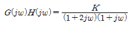
의 이득 여유가 20[dB]일 때 K값은? (단, w=0이다.)- K=0
- K=1/10
- K=1
- K=10
(정답률: 17%)
5과목: 전기설비기술기준 및 판단기준
81. 가공 전선로에 사용하는 지지물의 강도 계산에 적용하는 풍압하중 중 병종풍압하중은 갑종풍압하중에 대한 얼마의 풍압을 기초로 하여 계산한 것인가?
- 1/2
- 1/3
- 2/3
- 1/4
(정답률: 24%)
82. 시가지에 시설하는 154[kV] 가공전선로에는 지락 또는 단락이 발생한 경우 몇 초 이내에 자동적으로 이를 전로로부터 차단하는 장치를 설치하여야 하는가?
- 1
- 2
- 3
- 5
(정답률: 24%)
83. 제2종 접지공사를 시설하여야 하는 것은?
- 특고압 계기용변압의 2차측전로
- 변압기로 특고압선로에 결합되는 고압전로의 방전장치
- 특고압가공전선이 도로 등과 교차하는 경우 시설하는 보호망
- 특고압전로 또는 고압전로와 저압전로를 결합하는 변압기의 저압측 중성점
(정답률: 17%)
84. 전기철도용 변전소 이외의 변전소의 주요 변압기에 계측 장치가 꼭 필요하지 않은 것은?
- 전압
- 전류
- 주파수
- 전력
(정답률: 24%)
85. 최대 사용전압 15[V]를 넘고 30V] 이하인 소세력회로에 사용하는 절연변압기의 2차 단락전류 값이 제한을 받지 않을 경우는 2차측에 시설하는 과전류 차단기의 용량이 몇 [A] 이하일 경우인가?
- 0.5
- 1.5
- 3.0
- 5.0
(정답률: 13%)
86. 고압 가공전선이 케이블인 경우 가공전선과 안테나 사이의 이격거리는 몇 [cm] 이상인가?
- 40cm
- 80cm
- 120cm
- 160cm
(정답률: 17%)
87. 고압 가공전선로의 지시물에 첨가한 통신선을 횡단보도교위에 시설하는 경우 그 노면상의 높이는 몇[m] 이상으로 하여야 하는가?
- 3 이상
- 3.5 이상
- 5 이상
- 5.5 이상
(정답률: 17%)
88. 가공공동지선에 의한 제2종 접지공사에 있어 가공 공동지선과 대지간의 합성 전기저항 값은 몇 [m]를 지름으로 하는 지역마다 규정하는 접지 저항값을 가지는 것으로 하여야 하는가?
- 400
- 600
- 800
- 1000
(정답률: 14%)
89. 고압 가공인입선의 높이는 그 아래에 위험표시를 하였을 경우에 지표상 몇 [m] 까지로 감할 수 있는가?
- 2.5
- 3
- 3.5
- 4
(정답률: 21%)
90. 옥내전로의 대지전압 제한에 관한 규정으로 주택의 전로인입구에 절연변압기를 사람이 쉽게 접촉할 우려가 없이 시설하는 경우 정격용량이 몇 [kVA] 이하일 때 인체보호용 누전차단기를 시설하지 않아도 되는가?
- 2
- 3
- 5
- 10
(정답률: 13%)
91. 옥내에 시설되는 전동기가 소손될 우려가 있는 경우 과전류가 생겼을 때 자동으로 차단하거나 경보를 발생하는 장치를 시설하여야 한다. 이 규정에 적용되는 전동기 정격 출력의 최소값은?
- 150W 초과
- 200W 초과
- 250W 초과
- 300W 초과
(정답률: 17%)
92. 도로에 시설하는 가공 직류 전차선로의 경간은 몇[m]이하로 하여야 하는가?
- 30
- 40
- 50
- 60
(정답률: 16%)
93. 고압 지중전선이 지중 약전류전선 등과 접근하거나 교차하는 경우에 상호의 이격거리가 몇 [cm]이하인 때에는 두 전선이 직접 접촉하지 아니하도록 조치 하여야 하는가?
- 15
- 20
- 30
- 40
(정답률: 16%)
94. 사용전압이 35kV 이하인 특고압 가공전선과 가공 약전류 전선 등을 동일 지지물에 시설하는 경우, 특고압 가공전선로는 어떤 종류의 보안공사로 하여야 하는가?
- 제1종 특고압 보안공사
- 제2종 특고압 보안공사
- 제3종 특고압 보안공사
- 고압보안공사
(정답률: 16%)
95. 변압기 1차측 3300[V], 2차측 220[V]의 변압기 전로의 절연내력시험 전압은 각각 몇 [V]에서 10분간 견디어야 하는가?
- 1차측 4950[V], 2차측 500[V]
- 1차측 4500[V], 2차측 400[V]
- 1차측 4125[V], 2차측 500[V]
- 1차측 3300[V], 2차측 400[V]
(정답률: 24%)
96. 제1종 특고압 보안공사에 의해서 시설하는 전선로의 지지물로 사용할 수 없는 것은?
- 철탑
- B종 철주
- B종 철근 콘크리트주
- A종 철근 콘크리트주
(정답률: 21%)
97. 폭연성 분진 또는 화약류의 분말이 전기설비가 발화원이 되어 폭발할 우려가 있는 곳의 저압 옥내 전기 설비는 어느 공사에 의하는가?
- 캡타이어케이블공사
- 합성수지관공사
- 애자사용공사
- 금속관공사
(정답률: 24%)
98. 철주를 강관에 의하여 구성되는 사각형의 것일 때 갑종 풍압하중을 계산하려 한다. 수직 투영면적 1[m2]에 대한 풍압하중은 몇 [Ps]를 기초하여 계산하는가?
- 588
- 882
- 1117
- 1255
(정답률: 20%)
99. 저압 옥내간선의 전원 측 전로에는 그 저압 옥내간선을 보호할 목적으로 어느 것을 시설하여야 하는가?
- 접지선
- 과전류 차단기
- 방전 장치
- 단로기
(정답률: 25%)
100. 버스 덕트 공사에 덕트를 조영재에 붙이는 경우 지지점간의 거리는?
- 2[m]이하
- 3[m]이하
- 4[m]이하
- 5[m]이하
(정답률: 18%)